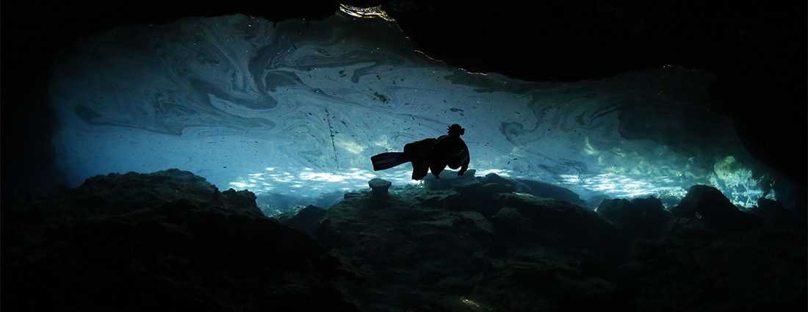
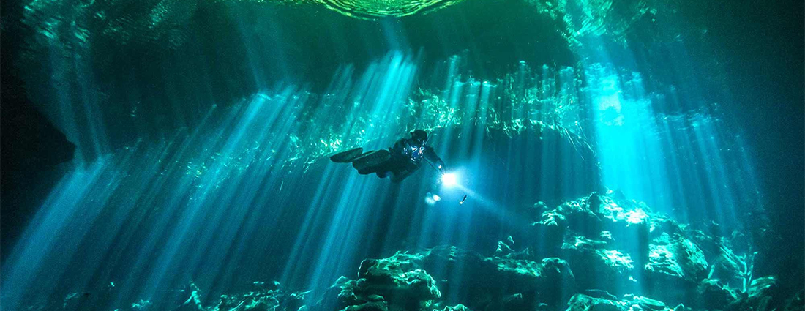

Cenote Chac Mool
Jaguar Cenote
Posted on 09 January 2018

CAVERN - Max Depth: 13m/42ft
CAVE - Max Depth: 30m/98ft, Avg Depth: 12m/40ft
As you and your guide head through the gate and start down the 2km drive to the dive site, keep your eyes and ears open for the jaguars who still lurk in the jungle undergrowth like to give us an occasional roar just to remind us that we have left our world behind and are now adventure in theirs.
There are two cavern dives from this cenote. The one leading upstream is easy going and perfect for first time cavern divers who are looking to explore the mystery of the caverns but might be feeling a bit anxious about being in an overhead environment. The other downstream cavern tour, whilst also very simple and relaxed, has a more noticeable flow of water. However the reward of some absolutely beautiful rock formations located in one of the rooms, make the extra effort more than worth it.
For certified cave divers, if we continue downstream, we will eventually come across "Xix Ha Tunich", or the Drip Water Stone, which is the world's tallest underwater stalactite measuring a massive 12m/40ft in height. However the journey to this rock formation is just as exciting as the destination. First we begin by stopping for a breath of fresh air at Cenote Emergency Air and do a quick search for some bats just before we head below the surface to continue our journey onto a spectacularly decorated and domed room. Resume your trip downstream from here and you'll venture into The Canyons cave where we'll see even more... epic structures. Further down the line we reach the Monsters House cave where you'll find the legendary speleothem. Finally you'll make your exit at Cenote Mojarra.
If travelling upstream from Chac Mool, the certified cave diver will enjoy a number of highly decorated rooms with a couple of breakdown areas thrown into the mix which always makes the experience that much more interesting. You can then exit at Cenote Pakal or continue onwards if you have sidemount experience.
"With the combination of the fossils on the cave floor and the stalactites hanging overhead, you're wondering, 'Where am I?"-- Brandon Cole